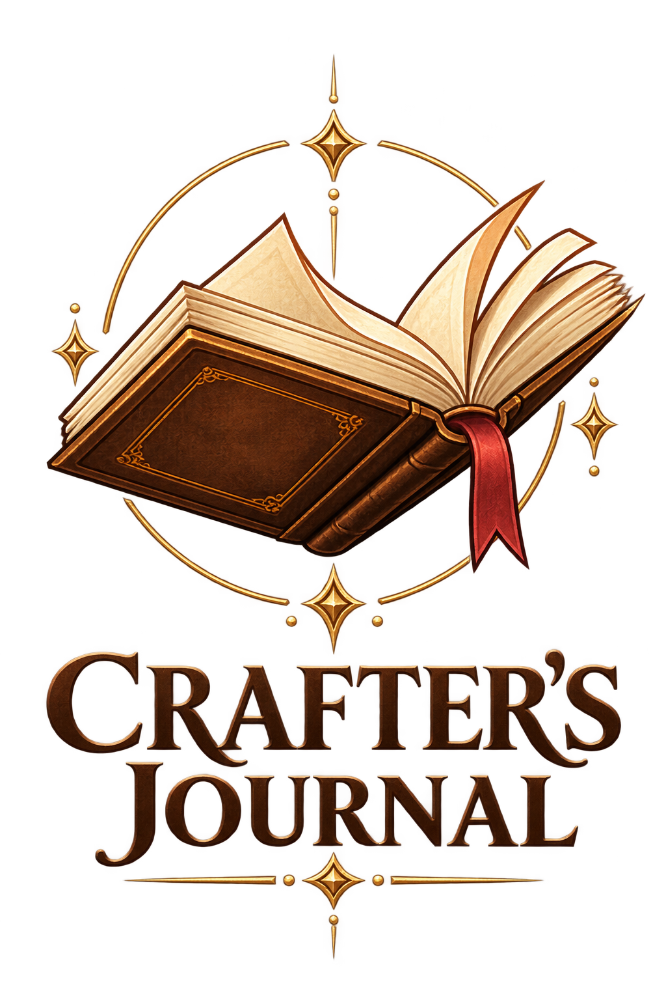

Crafting
Estimate required resources, crafting costs, resource returns, and production bonuses.

Independent third-party companion
Crafting and market tools built to help Albion Online players compare costs, estimate returns, discover opportunities, and review market activity.
Estimate required resources, crafting costs, resource returns, and production bonuses.
Compare crafting costs with historical market information to identify potential opportunities.
Review estimated buy and sell opportunities across supported Albion Online cities.
Market information used by the app is based on community-sourced data made available through the Albion Online Data Project. Market prices may change quickly and values shown by the app should be treated as estimates.